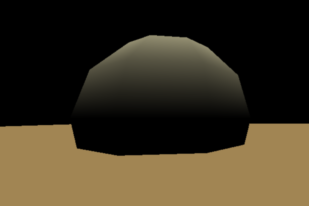
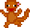

john dikeman

webgl experiment
this was my first attempt at the webGL framework. I used three.js and Chrome's pointer lock controls to create a simplistic world of a platform and a sphere. only works on Chrome, and mobile is not supported. click on the blank screen to begin.

BANANA-RAMA
a little game written with phaser.js. works on any browser, including mobile! fire bananas at the hungry monkeys. be warned: the 'menu' and 'retry' buttons don't work due to my utter befuddlement with OOP in javascript, so there's that.
john cena's PUNCH THE NERD
my submission to the John Cena Game Jam, which is just as magical as it sounds. it's on itch.io here: http://microwaveabletoaster.itch.io/john-cenas-punch-the-nerd